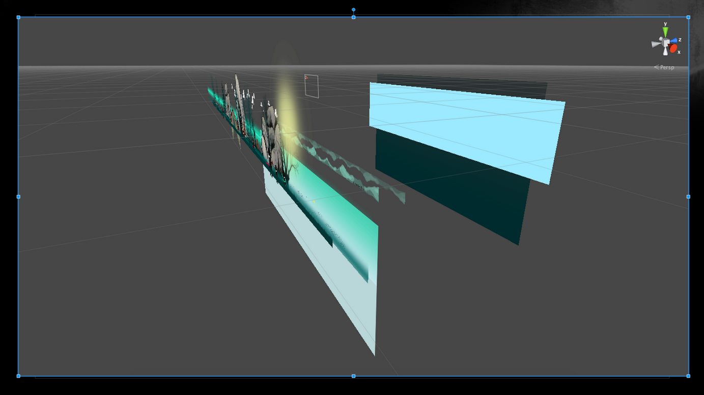

The Way of a Monk
My Capstone project for 2015
If you would like to check out a video which shows the final project, please click on the video to the left. It is a basic walk through of some of the ideas and concepts which we thought would make for a compelling game.
My job in the game was to facilitate the game design process. I also worked on the lighting, particles, as well as the ping system was developed by me. Franklin Zhang was director and also took care of the art, while Ebby Wahman helped with coding and general issues with Unity
Project Highlights


Art Inspirations

Technology
One of the earliest questions we had was what kind of game creation software did we want to use? We narrowed our selection down to three different choices, and in the end we chose Unity. One of the reasons why we liked Unity was due to one of it’s newer features - “Unity2D”.
Some of the features we liked about Unity2D are:
- 2D Physics Engine
- Auto Slicing of Sprite Sheets
- Joints for animation
Ping System
In early stages of development, our team decided that one of the features we really wanted in the game was a ability that allowed our Monk to navigate obstacles in the darkness.
We went through several different concepts of this system, and in the end we decided on what we dubbed the “Ping” system.
The “Ping” is basically a echolocation system in which the monk would let out a force (perceived as light) and this force would temporarily show or brighten objects which wouldn’t be easily seen.
How it works
The ping itself was easy enough to make once we figured out how to accomplish it. The ping itself is just a light, however we use a “cookie” which shapes the light as a ring. A cookie is basically an object in front of a light which casts a shadow in order to add some patterned illumination.
After we had the light shaped the way we wanted it, we just added an animation which pulled the light and cookie assemble away from the object, which created the illusion of the ping expanding.
Then we added some particles to the animation which helped created a sense of magic which accompanies it. Here is a video of one of the earliest versions of the ping in action..
Level Design Drafts
Here are some early level design drafts, here we were trying to get an idea on how we wanted the obstacles to work, as well as try to find some flow to the level.
Compiled Levels
This is a quick peek at how the level was composed. In the second picture you can see the different layers. These layers (especially the backgrounds) move at different speeds to give the player a better sense of movement.
Miami Magazine
We even had the University of Miami magazing come do a story about us. We even made the front cover! Shouts out to Franklin my partner in crime and hand model extraordinaire!
Of course there is always more to come as I have lot of assets left over. As I work on this site more and more information will be posted here, please feel free to stop by and check for updates!